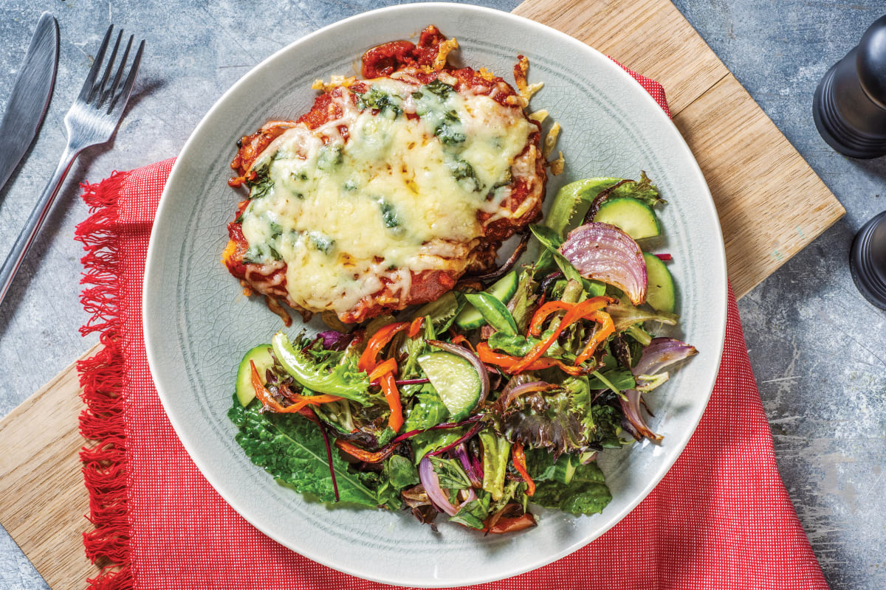

Go to see video
How to cook
Chicken Parmesan
Ingredients
- 1/2 cup Italian-style bread crumbs
- 1/4 cup grated Parmesan cheese
- 1 egg
- 1 tablespoon water
- 1/4 cup all-purpose flour
- 1/3 cup vegetable oil
- 4 chicken breast cutlets, pounded to an even thickness (about 1 pound)
- 1 can (24 oz each) Hunt's® Tomato Basil Pasta Sauce, divided
- 1/2 cup shredded mozzarella cheese
- 8 ounces dry spaghetti, uncooked
- 2 tablespoons chopped fresh basil, optional
- Prepare the chicken. Place each halved chicken breast between 2 sheets of plastic wrap or in a freezer bag. Carefully flatten the chicken breasts with a rolling pin to achieve uniform thickness, about ½-inch thick. Don’t pound the breasts too hard. Pat dry each breast completely with a paper towel and season with 1 teaspoon salt. Set aside for at least 10 minutes
- Then, add garlic and sauté for another 2 minutes until fragrant. Add tomato sauce, tomato paste, Italian seasoning, parsley, and salt. Stir well to combine and bring the sauce to a simmer. Turn to low heat and let it simmer for 5 minutes. Remove from heat and transfer sauce into a bowl.
Now, let's assemble the chicken parmesan and bake. In the same skillet (or in another cast-iron skillet or casserole dish), evenly spread ½ cup of the sauce on the bottom. Place the chicken breasts spaced evenly apart over the sauce. Cover each breast with ¼ cup sauce, and top each breast with a slice of mozzarella cheese and 1 tablespoon Parmesan cheese. Sprinkle finely chopped parsley on top.
- Then, heat oil in a non stick cast-iron skillet over medium-high heat for 2 minutes until the hot oil is sizzling and shimmering. Pan fry the chicken breasts for about 4-5 minutes on each side until golden and crispy. Set aside on a plate. The chicken should be almost fully cooked and the internal temperature should reach above 155 F, as measured on a meat thermometer.
Then, prepare the tomato sauce. Remove all but 2 tablespoons of the hot oil in the skillet. Add onions and sauté for 2 minutes until soft and tender.
- Bake in a 425F preheated oven for 15-20 minutes until the cheese melts and turns golden brown. Serve with spaghetti and garnish with more parsley on top.
back to home page
Author:Maria
The copyright © 2023